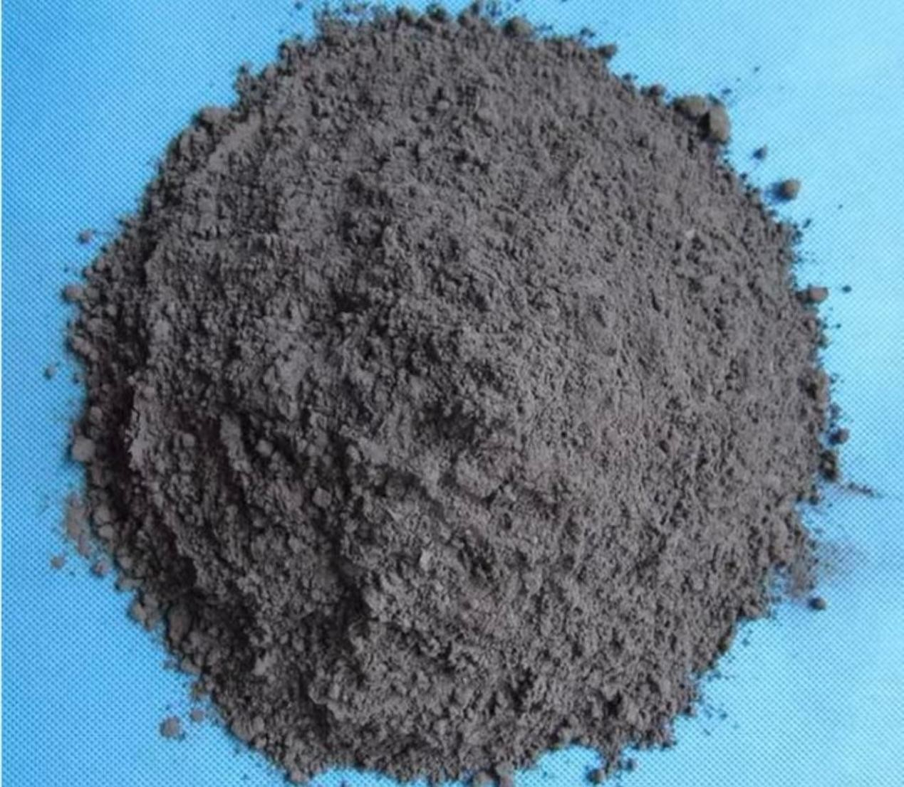
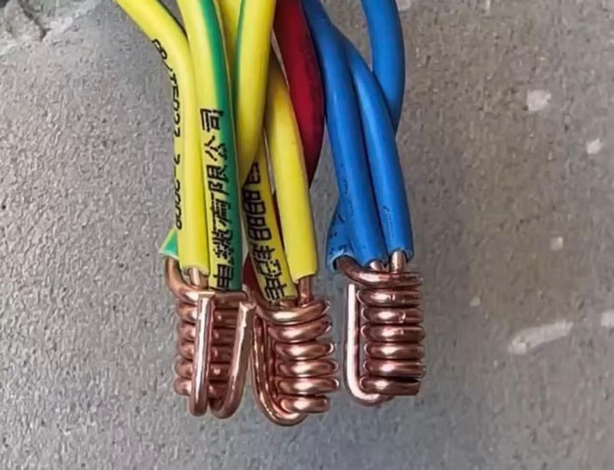

HOMEWORK 5
材料认知与工具使用
Homework 5: 材料认知与工具使用
第16周：鼠标材质分析与制造工艺推断报告

一、样品基本信息
物品名称：联想小新 XM300 光电办公鼠标
功能用途：通过检测移动方向和位移量，转换为屏幕上的光标移动信号，实现人机交互
外观尺寸：典型尺寸约为112×52×23mm（不同型号会有差异）
二、材料构成分析
| 部件名称 | 主要材料类型 | 判断依据 |
|---|---|---|
| 上盖外壳 | ABS工程塑料 | 轻便、强度适中、可注塑成型 |
| 底部外壳 | ABS工程塑料 | 耐磨、成本可控 |
| 表面涂层 | 类肤橡胶漆 | 不同鼠标采用不同表面处理工艺 |
| 滚轮 | 橡胶/硅胶 | 柔软有弹性，增加摩擦力 |
| 侧裙 | 橡胶材质（部分高端型号） | 防滑、握持舒适 |

三、材料特性分析
1. 物理与机械性能
| 特性类别 | 具体参数 | 说明 |
|---|---|---|
| 外壳密度 | 1.02–1.06 g/cm³ (ABS) | 轻便，降低移动惯性 |
| 外壳硬度 | R100–R110 | 抗日常刮擦 |
| 注塑加工温度区间 | 220–250℃ | 适合注塑成型工艺 |
| 表面质感 | 类肤哑光触感 | 影响防滑性和手感 |
2. 表面材质分类
根据表面处理工艺，鼠标主要分为以下四种类型：
| 表面类型 | 工艺特征 | 手感特点 | 耐久性 |
|---|---|---|---|
| 类肤质 | 喷涂橡胶漆 | 细腻柔软，类似皮肤触感 | 较易磨损老化 |
| 磨砂 | 塑料表面咬花处理 | 有细微颗粒感，防滑 | 长期使用可能打油 |
3. 颜色信息

四、制造工艺推断
1. 外壳制造：注塑成型
外壳采用注塑成型工艺制造：
- 将 ABS 塑料颗粒加热至 220–250℃区间完全熔融
- 注入精密模具（一模两腔布局，提高效率）
- 保压冷却后脱模
关键工艺参数需控制填充时间、注射压力和冷却速度，避免熔接痕、翘曲变形等缺陷
2. 表面处理（按工艺分类）
根据你的鼠标表面类型，对应的工艺如下：
ABS 外壳注塑成型 → 壳体表面脱脂除尘前处理 → 均匀喷涂橡胶手感漆 → 恒温烘箱烘干固化，成品呈现哑光亲肤质感。
3. 组件组装
- 滚轮装配：橡胶滚轮搭配塑料轴心预装
- 壳体总装：内置光学模组放入底壳，安装滚轮组件，扣合上盖，超声波熔合固定壳体
- 成品检测：按键按压、蓝牙连接、光标移动功能全检
4. 工作原理简析
鼠标移动时，底部 LED 光源照射桌面，光学传感器连续采集桌面纹理图像，主控芯片比对连续图像位移差值，将位移信号转化为坐标数据，通过蓝牙传输至电脑实现光标移动。
五、结论
鼠标作为高频使用的输入设备，其材料选择体现了功能与成本的平衡：
- ABS塑料外壳：成本低、加工性好、重量轻，满足大批量生产需求，注塑成型工艺成熟可靠
- 类肤橡胶漆表面处理：针对办公长时间握持场景，兼顾防滑、吸汗，弥补 ABS 原生塑料偏滑的缺陷；缺点为长期使用表层漆会老化磨损
- 多标准色号的工业应用价值：产品量产阶段，RGB/HEX/CMYK/Pantone/RAL 劳尔五套色卡为模具厂、喷涂车间、品牌设计端统一颜色标准，RAL 劳尔色卡是工业塑胶喷涂通用标准，可避免批次色差，保障量产外观统一
一、日常生活中引入至少1种金属、1种塑料、1种复合材料
2. 塑料：PMMA 亚克力（有机玻璃，机器人外壳）
(1) 定义与组成
聚甲基丙烯酸甲酯热塑性塑料，分透明、磨砂板材，支持激光切割、雕刻加工。
(2) 分类
- 透明亚克力板
- 磨砂雾面亚克力板（项目选用磨砂款，光线柔和不刺眼，适配老年人视觉）
(3) PMMA 亚克力板材核心优势
- 光学性能顶尖：可见光透光率可达 92% 以上，远超普通玻璃，透光均匀无杂色；磨砂款可柔化强光，防眩光。
- 安全抗冲击：抗冲击强度是普通钠钙玻璃的十几倍，磕碰不易碎裂，即便破损也无尖锐碎渣，使用安全性高。
- 轻量化：密度仅为玻璃一半，大幅减轻设备整体重量，方便搬运、手持。
- 易加工成型：可激光雕刻、切割、热弯、粘接，能制作异形曲面、镂空造型，定制化外壳成本低。
- 耐候耐腐蚀：耐弱酸、弱碱、家用清洁试剂，日常擦拭不会发白、腐蚀；室内长期使用不易黄变老化。
- 绝缘阻燃：不导电，具备基础阻燃性能，居家使用无漏电起火隐患。
- 外观可塑性强：可染色、磨砂、抛光处理，兼顾实用与外观美观度。
(4) 物理性质
透光率高，韧性优于普通玻璃，磕碰不易碎裂；重量轻便，易加工异形外壳；绝缘不导电。
(5) 化学性质
耐家用清洁剂、弱酸弱碱，湿布擦拭不会腐蚀发白。
(6) 应用领域
耐家用清洁剂、弱酸弱碱，湿布擦拭不会腐蚀发白。
(5) 应用领域
- 本项目：机器人机身外壳、指示灯灯罩、按键面板；
- 日常生活：展示柜、眼镜镜片、卫浴隔断。

二、找到至少2种新材料
1. PLA 聚乳酸（3D 打印耗材，生物降解塑料）
(1) 物理和化学性质
密度 1.25-1.28g/cm³，熔点 176℃；常温稳定，60℃以上软化；可被微生物完全降解为 CO₂与水，无毒无味。
(2) 加工性能
适配桌面 3D 打印，不易翘边开裂，可打印镂空、异形精密零件。
(3) 优点
环保无污染；打印细节精度高；无刺激性挥发气味，适合室内老年环境。
(4) 应用领域
- 本项目：3D 打印传感器支架、按键底座、电池固定外壳；
- 日常生活：一次性餐具、文创模型、医疗耗材。

2. 磷酸铁锂（锂离子电池正极材料）
(1) 物理和化学性质
橄榄石型晶体结构粉末材料，化学稳定性极强，不易发生热分解；导电性良好，循环充放电寿命长；耐高低温，低温环境放电性能衰减幅度小。
(2) 性能特点
原材料储量丰富、生产成本更低；充放电循环次数可达 3000 次以上；热稳定性优异，不会出现高温爆燃风险，安全系数高；无重金属钴，绿色低污染。
(3) 优点
安全稳定，耐高温不易起火爆炸；使用寿命远高于传统三元正极材料；原料环保，回收处理难度低；适配低压家用储能设备。
(4) 应用领域
- 本项目：设备储能电源内部电池正极核心原料；
- 日常生活：家用储能电源、低速代步车电池、户外便携储能设备。

三、查找1种金属的后处理方法、1种塑料的后处理方法、1种木材的后处理方法
1. 金属铜的后处理方法：铜线镀锡处理
(1) 处理步骤
- 脱脂清洗：去除铜线表面油污杂质；
- 酸洗活化：弱酸浸泡去除铜氧化层；
- 热浸镀锡：线材浸入熔融锡液，均匀附着锡层；
- 冷却吹干：冷水冷却，风干成品。
(2) 处理效果
隔绝空气防氧化，提升焊接牢固度，潮湿环境不易锈蚀断路。
(3) 注意事项
镀层厚度均匀，避免线材变硬易折断。
2. 塑料 PMMA 亚克力的后处理方法：火焰抛光
(1) 处理步骤
- 打磨预处理：砂纸打磨激光切割后的毛边；
- 酒精除尘：清理板材粉末碎屑；
- 火焰抛光：低温火焰快速扫过切面，表层熔融流平；
- 自然冷却，切面光滑通透。
(2) 处理效果
消除尖锐棱角、切割毛刺，避免划伤老人手部，提升外壳美观度。
(3) 优缺点
- 优点：加工快捷；
- 局限：火焰停留过久板材会融化变形。

3. 木材的后处理方法：松木清漆封闭防腐处理
(1) 处理步骤
- 预处理：松木打磨去皮，去除木刺毛刺；
- 底漆薄刷：第一层封闭清漆干透后轻打磨；
- 面漆涂刷：均匀刷哑光清漆，通风完全干燥。
(2) 处理效果
防潮防开裂、防虫防霉；表面光滑无木刺，老人触碰安全。
(3) 注意事项
清漆完全干透再装配，避免挥发性气味刺激呼吸道。

四、期末项目中引入所有线轨细节（PVC 绝缘铜芯杜邦线走线）
整机线路统一使用分色 PVC 绝缘铜芯杜邦线搭建线轨：
- 线材分色标准化区分结构用途：红色线材用于电源传导、黑色线材作为回路走线、黄绿双色线材作为外接信号传输线，色彩区分便于后期拆装、检修；
- 设备外壳内部使用 3D 打印 PLA 支架分隔出独立封闭线槽，所有线材统一收纳在线槽内部，无任何金属铜丝裸露在外，杜绝金属接触摩擦带来的磨损、短路隐患；
- 设备活动关节处预留充足线材松弛余量，关节转动、弯折时不会拉扯线材造成内部铜芯断裂，延长线材使用寿命；
- 线材接头位置统一使用热缩管多层包裹绝缘防护，隔绝金属接头与外壳、支架直接接触，进一步提升结构安全；
- 机身底部设置一体化通长主线通道，搭配玻纤环氧树脂绝缘隔板分区隔离不同功能线材，电源走线、外接走线分区收纳，互不干涉；
- 外壳采用磨砂 PMMA 亚克力板材包裹线槽区域，板材边缘经过火焰抛光处理，无尖锐棱角，兼顾结构防护与使用安全；
- 内部支撑结构选用 PLA 打印件，轻量化、易定制，可根据线材粗细调整线槽宽度，适配不同规格线材规整排布。
